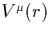

Firstly the Kohn-Sham (K-S) equations are solved in an all-electron
calculation for a single atom. The configuration of the K-S levels is
important, since this is used as a reference atom for the
pseudopotential. Therefore two special criteria are applied. Firstly
configurations are chosen so the charge density is spherically
symmetric, and so can be labelled with angular momentum numbers (or for heavy elements requiring Dirac formalism). Secondly
for the higher angular momentum states a small fraction of the valence
electrons are shifted into apparently unoccupied states (e.g. In Si,
the d-pseudopotential comes from the configuration
1s22s1p0.75d0.25). This is so that the d-type states are
included correctly when constructing the wavefunctions in solids. The
electronic fraction chosen for this excitation is picked to eliminate
`bumps' in the potential and is different for different atomic
species![[*]](foot_motif.gif) .
.
The solution of the K-S equations gives the all-electron potential,  which has a Coulomb singularity at r = 0. An initial guess pseudopotential is generated for each configuration and angular momentum which eliminates this singularity,
| (13) |
f(x) = 1 at the origin and vanishes rapidly as x increases (in
their work, f(x) = e-x<<853>>3.5). Thus at the origin, , and this is set so that the lowest energy level for each l
matches the equivalent all-electron solution. By shifting the value
of  downwards it is possible to decrease the curvature of the
pseudopotential, making it easier to fit; such pseudopotentials are
known as ultra-soft pseudopotentials, and are essential for
plane wave calculations of elements such as oxygen. However these are
not always as accurate or transferable as the `bhs' pseudopotentials
described here. rc,l is the core radius and defines a minimum
radius beyond which the pseudo wavefunction matches the all-electron
wavefunction. As such it is an indication of the quality of the
pseudopotential (the closer this lies to the core, the more realistic
the potential). However this is a trade off between the minimum
preferred radius before the potential becomes too rapidly varying and
the benefit of using pseudopotentials is lost; rc,l normally lies
halfway to the outermost node of the all-electron wavefunction.
downwards it is possible to decrease the curvature of the
pseudopotential, making it easier to fit; such pseudopotentials are
known as ultra-soft pseudopotentials, and are essential for
plane wave calculations of elements such as oxygen. However these are
not always as accurate or transferable as the `bhs' pseudopotentials
described here. rc,l is the core radius and defines a minimum
radius beyond which the pseudo wavefunction matches the all-electron
wavefunction. As such it is an indication of the quality of the
pseudopotential (the closer this lies to the core, the more realistic
the potential). However this is a trade off between the minimum
preferred radius before the potential becomes too rapidly varying and
the benefit of using pseudopotentials is lost; rc,l normally lies
halfway to the outermost node of the all-electron wavefunction.
The next step is to normalise the wavefunction (since the pseudowavefunction is currently only proportional to the all-electron one). If Vl(r) has a corresponding wavefunction , then a new wavefunction is created,
| (14) |
and are varied until exactly equals the all-electron wavefunction outside the core. The Schrödinger equation is then inverted, using the eigenvalues corresponding to the all-electron eigenvalues, which produces the potential that gives rise to . This potential nearly conforms to all of the requirements listed above. Finally it is necessary to subtract the Hartree and exchange-correlation contributions to this potential due to the pseudo-wavefunctions themselves (since these are later included explicitly in the calculation). This leaves a bare ion potential. This is exact for the Hartree potential but is only approximate for the exchange-correlation potential as it is non-linear. However the approximation can be improved by subtracting the exchange-correlation potential derived from an all-electron calculation, with the added benefit of improving the transferability of the potential [27].
For relativistic solutions, the pseudopotential (Vps(r)) is constructed from an average of the states (Vl(r), the scalar relativistic potential) and a spin-orbit potential, Vlso(r),
In practise each pseudopotential is split into two groups, the
local and non-local pseudopotential, depending on whether the
terms are independent of l or not, respectively. These two sets of
terms are then parameterised to a set of error functions, Gaussian,
and r2  Gaussian based functions. It is the coefficients of
these which are given in Bachelet, Hamann and Schlüter's paper
[23].
Gaussian based functions. It is the coefficients of
these which are given in Bachelet, Hamann and Schlüter's paper
[23].